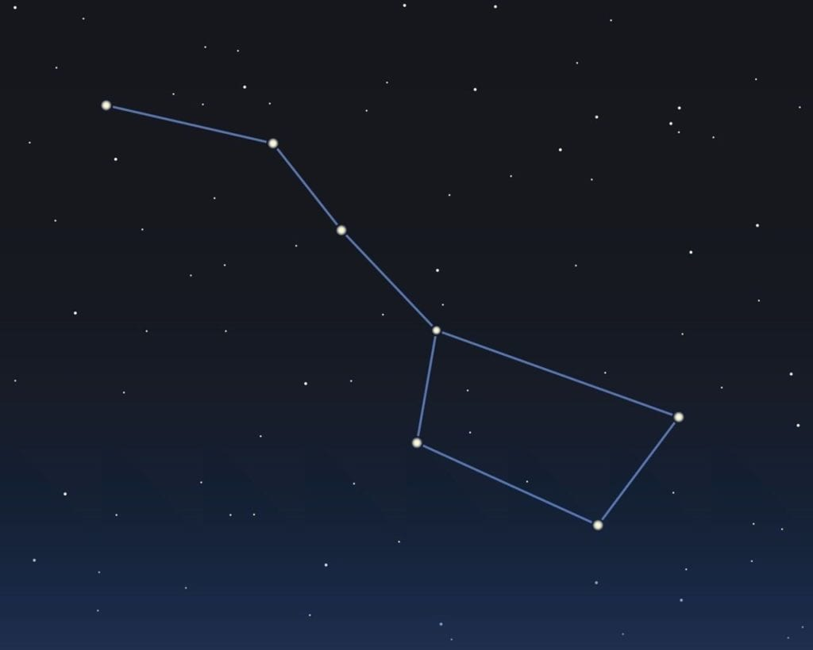

HOW TO SPOT CONSTELATIONS
To spot a constellation, first look in the sky and connect the stars together in your head. That's how you can spot a constellation.
The most noticeable constellation is the Big Dipper, which is made up of 7 stars and looks like a pot or ladle.

Stewart, Suzy. "The Big Dipper Asterism - Facts & Info". The Planets, https://theplanets.org/asterisms/big-dipper-asterism/. Accessed 5 June, 2026.
SIGNIFICANCE AND HISTORY OF CONSTELLATIONS
USE OF CONSTELLATIONS
Constellations have been used for thousands of years by different groups and cultures for many reasons such as:
- Navigation
- Storytelling
- Calendar systems
In modern time, constellations are still used by astronomers for locating other objects in the sky.
HISTORY OF CONSTELLATIONS
The origin of constellations dates back to ancient Greece and Mesopotamia where the greeks
borrowed the constellations from.
SIGNIFICANCE
Constellations are important because they helped humans for thousands of years to navigate, serve as a calendar, and even today they help astronomers locate objects in the universe.